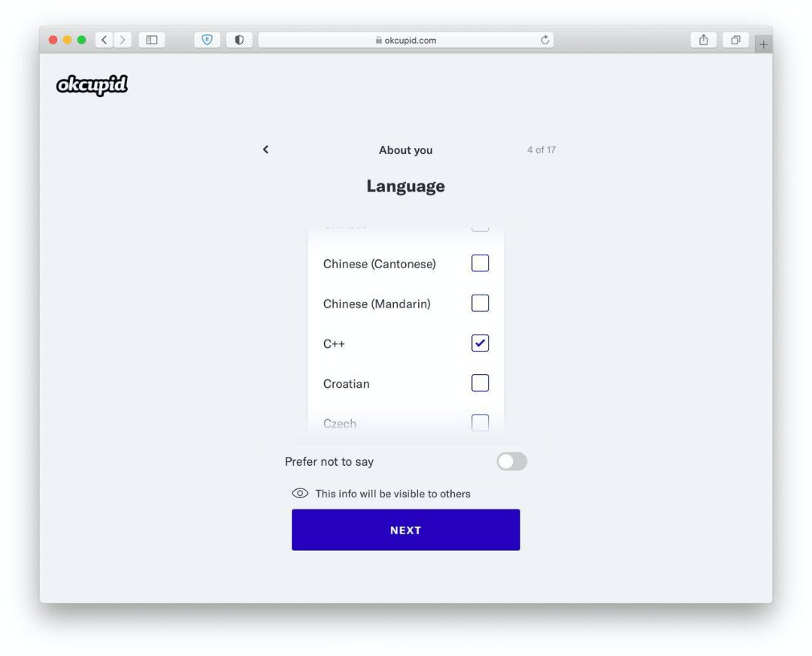

Задание 1, пример этого сервера
Задание 1, пример этого сервера
Как сделать сайт в локальной сети?
Задание 1
-
Создайте файл сервера node.js (проверьте, что у вас есть nodejs на пк)
-
Откройте cmd. Введите команду ipconfig и определите адрес вашего пк
- Разверните сервер по этому адресу.
- На главной странице поприветствуйте пользователя и сообщите, чей это ПК. Выведите ip где-то на странице или
в консоль
- * Реализуйте ассоциативный массив с пользователями нашей сети. В зависимости от того, кто зашел,
поприветствуйте по имени
Если вы забыли, как создавать сервер, вот вам ссылка, где
подробно рассказывается об этом
- Максим. адрес: 192.168.30.152:3000
- Денис. адрес: 192.168.2.89:3000
- Саша. адрес: 192.168.30.1:3000
- Артём. адрес: 192.168.30.233:3000
- Лёша. адрес: 192.168.30.12:3000
- Рома. адрес: 192.168.2.79:3000
- Матвей. адрес: 192.168.2.45:3000
Задание 2
- Создать файлы index.html, header.html, footer.html . Внутри страницы inde.html разместить:
- Шапку (тег header), пустую
- Основной контент (тег main), разместите сюда информацию о том, кто делал этот сайт, коротко расскажите о себе, вставьте какую-нибудь картинку
- Подвал (тег footer), пустой
- Сделайте также страницу 404.html . Разместите в ней текст о том, что страница не существует и оставьте ссылку на главную страницу (только название index)
- В сервере сделайте так, чтобы по запросу на ваш адрес открывалась главная страница. Установите заголовок 200
- Добавьте обработчик, который проверяет, есть ли файл с нужным названием в папке. Если нет, то, соответственно, нужно открывать страницу 404. При открытии этой страницы установите заголовок 404
Задание 3
- Сделайте шаблон из страницы index.html. Вставьте в места, где шапка и подвал соответствующие символы
- С помощью синхронных методов считайте информацию с шапки и подвала в переменные
- Вставьте по шаблону

Место проживания: StackOverflow